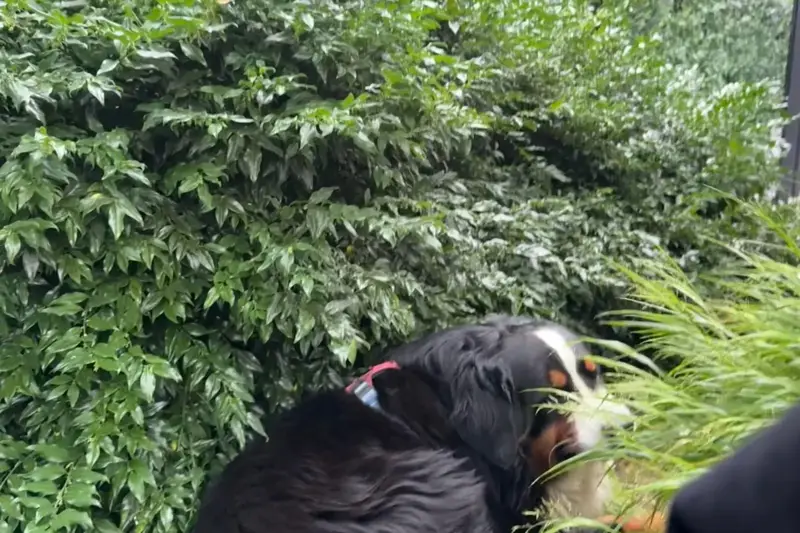
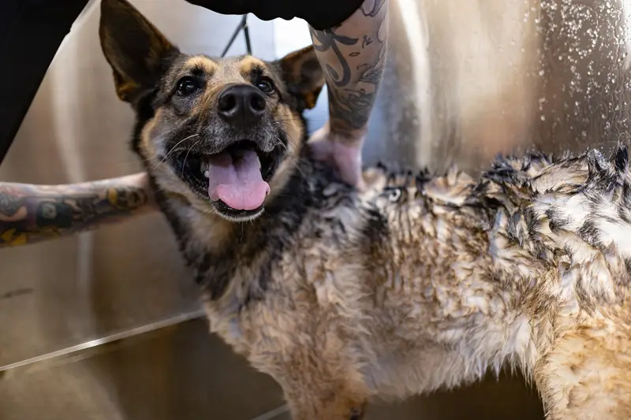

🐾 Friendly answers, fast
Questions about your cat or dog? Start here.
Short, clear answers with vet red flags up front. Look it up, then call your vet if anything worries you.
⚠️ Not veterinary advice. If your pet is sick or hurt, contact a vet.


Popular questions
 CatWhy is my cat throwing up?→
CatWhy is my cat throwing up?→ CatCan cats drink milk?→
CatCan cats drink milk?→ CatWhy does my cat knead?→
CatWhy does my cat knead?→ DogCan dogs eat grapes?→
DogCan dogs eat grapes?→
DogWhy is my dog eating grass?→
DogHow often should I bathe my dog?→No match yet. Try another word.
Browse by topic


Our picks
Affiliate funded. As an Amazon Associate I earn from qualifying purchases.